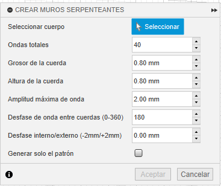

Ayuda: Cuerdas Serpenteantes
Descripción General
Este comando está pensado para generar un patrón de cuerdas serpenteantes alrededor de un cuerpo sólido. El cuerpo seleccionado permanece intacto; solo se utiliza su forma para crear múltiples cuerpos nuevos en forma de ondas sinusoidales a lo largo del eje Z.
Parámetros de Configuración
Seleccionar cuerpo
Aquí se selecciona el cuerpo al que le deseamos generar su forma tejida. Solo acepta un cuerpo por proceso.
Ondas totales
Este valor controla cuántas ondas completas aparecen a lo largo del perímetro del cuerpo.
- Un valor bajo (ej. 10): Es rápido, pero crea muy pocas ondas para piezas grandes.
- Un valor moderado (ej. 60): Es rápido y crea suficientes ondas para un buen efecto tejido.
- Un valor alto (ej. 100): Incrementará considerablemente el tiempo de cálculo, pero puede verse bien en piezas grandes.
Grosor de la cuerda
Este valor especifica el grosor de la cuerda que se va a generar. Este valor puede no ser exacto, ya que en ocasiones Fusion no puede generar el grosor para cualquier geometría y el plugin lo reintenta con un valor un poco más pequeño o un poco más grande.
- Un valor bajo (ej. 0.2mm): Es rápido, pero puede ser demasiado delgado para algunas aplicaciones.
- Un valor alto (ej. 3.2mm): Puede ocasionar errores al ser difícil de dibujar en geometrías complejas.

Altura de la cuerda
Este valor controla la altura de cada cuerda generada, ideal para generar cuerdas con varias capas de impresión.
- Ejemplo: Si imprimes a 0.4mm de altura de capa y quieres que se impriman 2 capas por cuerda, deberías colocar 0.8mm en este campo.

Amplitud máxima de onda
Este valor controla qué tan grande será cada onda de la cuerda que se va a generar. El plugin ajustará este valor automáticamente para lugares muy estrechos.
- Un valor bajo (ej. 0.1mm): Genera un efecto ondulado apenas perceptible.
- Un valor alto (ej. 5mm): Podría generar voladizos difíciles de imprimir.

Desfase de onda entre cuerdas (0-360)
Este valor controla cómo se dibujan las ondas de cada cuerda y el desfase que hay entre ellas.
- Un valor de 0 o 360: Genera todas las ondas alineadas verticalmente.
- Un valor de 180: Genera un efecto tejido clásico, al alternar las ondas entre cuerda y cuerda.
Desfase interno/externo (-2mm/+2mm)
Este valor aplica un desfase general a las cuerdas hacia adentro o hacia afuera del cuerpo principal.
- 0mm: Genera cuerdas con ondas que, en su punto más interno, tocan la superficie del cuerpo original.
Generar solo el patrón
Esta casilla de verificación sirve para generar solo el patrón de las cuerdas y no todas las cuerdas que habría en el cuerpo seleccionado.
- Ideal si no estás seguro(a) de todos tus parámetros y quieres previsualizar el resultado con algunas cuerdas antes de aplicarlo a un diseño grande.
- Ideal en caso de que se lo quieras aplicar a una forma simple (como un cilindro). Es más rápido generar solo el patrón y luego repetirlo manualmente.